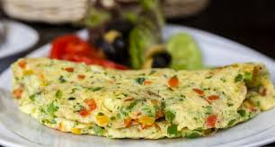
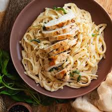
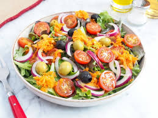
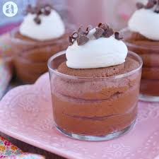

Ingredientes: 2 huevos, espinaca, tomate, cebolla, sal y pimienta.
Preparación: Bate los huevos y mezcla con las verduras picadas. Cocina en sartén a fuego medio hasta que esté dorado por ambos lados.
Ingredientes: Pasta, pechuga de pollo, crema, mantequilla, ajo y queso parmesano.
Preparación: Cocina la pasta, saltea el pollo y luego añade crema y queso. Mezcla todo y sirve caliente.
Ingredientes: Lechuga, tomate cherry, pepino, queso feta, aceitunas y aceite de oliva.
Preparación: Mezcla todos los ingredientes en un bol y añade sal al gusto. Aliña con aceite de oliva.
Ingredientes: Chocolate negro, crema batida, huevos y azúcar.
Preparación: Derrite el chocolate, mezcla con las yemas, añade la crema y las claras montadas. Refrigera al menos 2 horas antes de servir.
